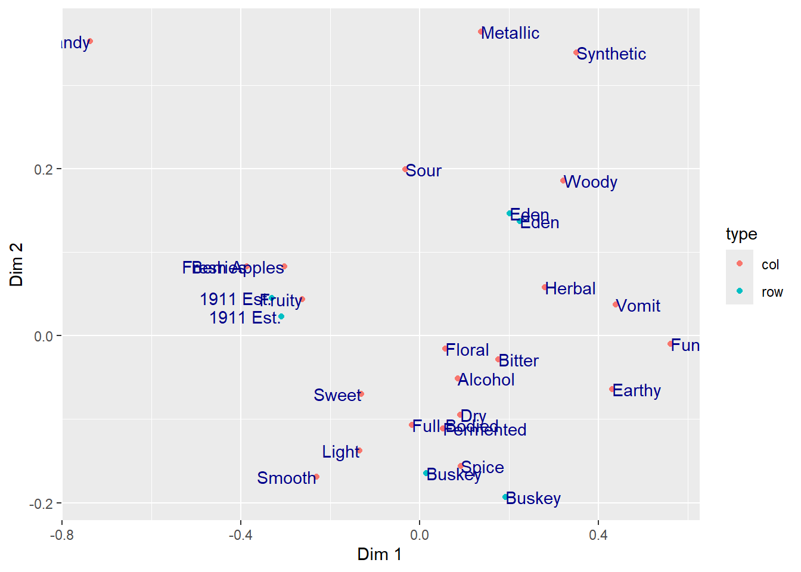
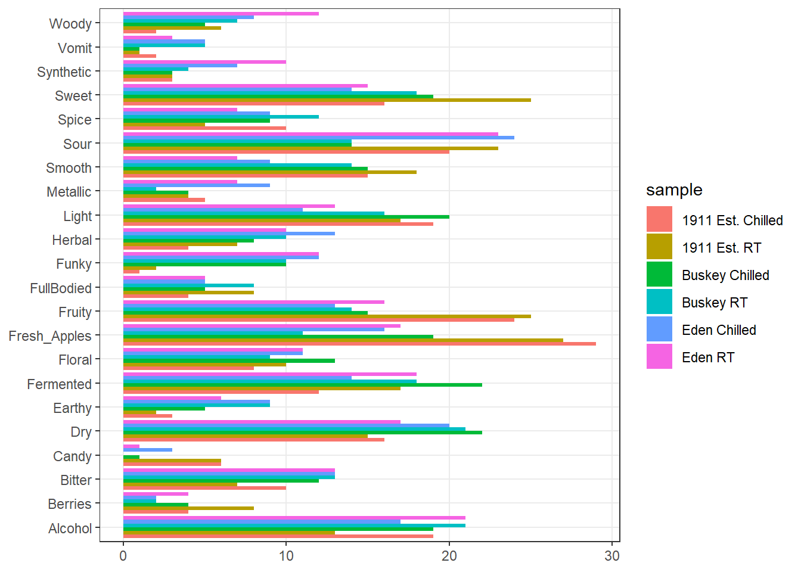
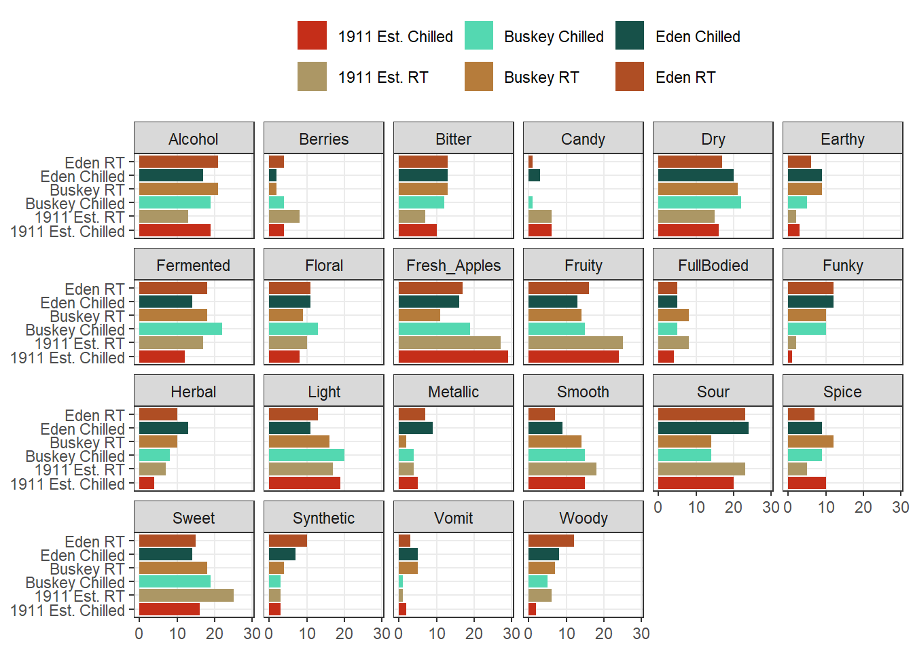
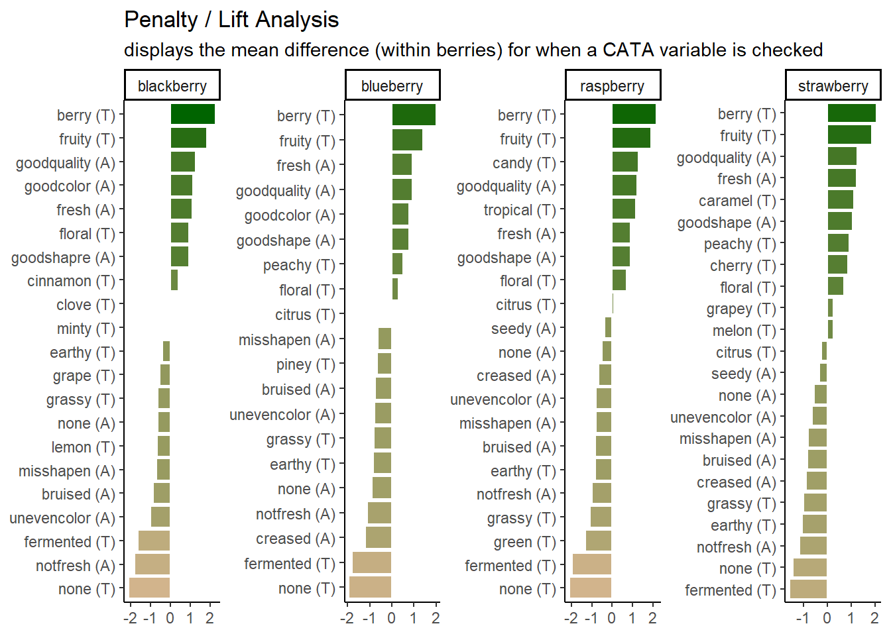
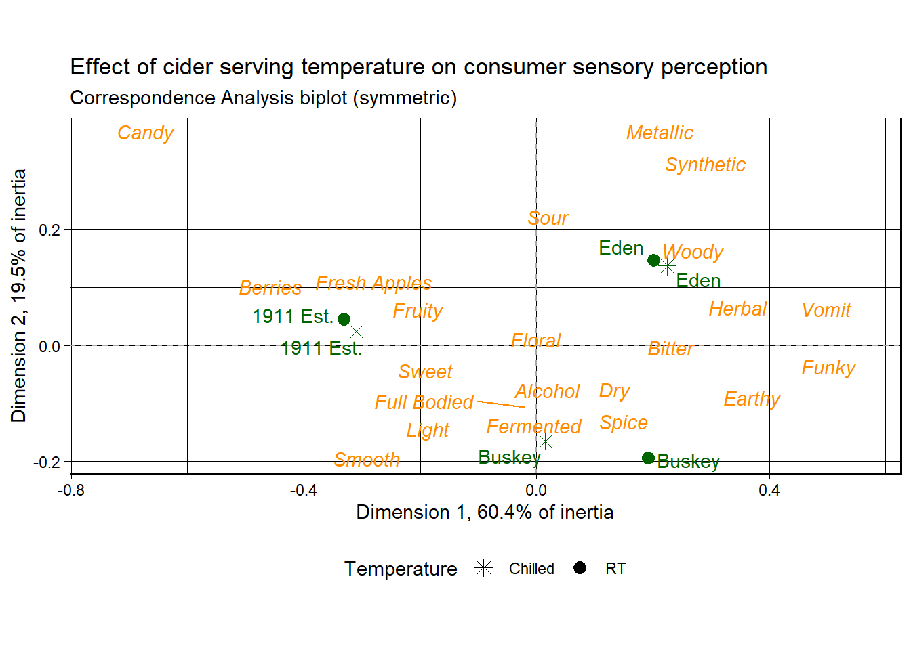

2 The basics of plotting with ggplot2
Base R includes extremely powerful utilities for data visualization, but most modern applications make use of the {tidyverse} package {ggplot2}.
A quick word about base R plotting–I don’t mean to declare that you can’t use base R plotting for your projects at all, and I have published several papers using base R plots. Particularly as you are using R for your own data exploration (not meant for sharing outside your team, say), base utilities like plot() will be very useful for quick insight.
ggplot2 provides a standardized, programmatic interface for data visualization, in contrast to the piecemeal approach common to base R graphics plotting. This means that, while the syntax itself can be challenging to learn, syntax for different tasks is linked by a common vocabulary, and differs in logical and predictable ways.
Together with other {tidyverse} principles (like select() and filter() approaches), ggplot2 makes it easy to make publication-quality visualizations with relative ease.
In general, ggplot2 works best with data in “long” or “tidy” format, such as that resulting from the output of pivot_longer().
The schematic elements of a ggplot are as follows:
# The ggplot() function creates your plotting environment. We usually save it to a variable in R so that we can use the plug-n-play functionality of ggplot without retyping a bunch of nonsense
p <- ggplot(mapping = aes(x = <a variable>, y = <another variable>, ...),
data = <your data>)
# Then, you can add various ways of plotting data to make different visualizations.
p +
geom_<your chosen way of plotting>(...) +
theme_<your chosen theme> +
...In graphical form, the following diagram (from VT Professor JP Gannon) gives an intuition of what is happening:

2.1 Your first ggplot()
Our cider data is already relatively tidy and is much easier to visually inspect, so we will be primarily using it in this section.
Let’s begin by making an example ggplot() to demonstrate how it works. We will focus on the cider CA coordinates so that we can build up a somewhat meaningful plot.
# We start with our data and pipe it into ggplot
ca_cider_coords %>%
# Here we set up the base plot
ggplot(mapping = aes(x = `Dim 1`, y = `Dim 2`)) +
# Here we tell our base plot to add points
geom_point() 
This doesn’t look all that impressive–partly because the data being plotted itself isn’t sensible without other context that exists in the data frame, and partly because we haven’t made many changes. But before we start looking into that, let’s break down the parts of this command.
2.2 The aes() function and mapping = argument
The ggplot() function takes two arguments that are essential, as well as some others you’ll rarely use. The first, data =, is straightforward, and you’ll usually be passing data to the function at the end of some pipeline using %>%
The second, mapping =, is less clear. This argument requires the aes() function, which can be read as the “aesthetic” function. The way that this function works is quite complex, and really not worth digging into here, but I understand it in my head as telling ggplot() what part of my data is going to connect to what part of the plot. So, if we write aes(x = `Dim 1`), we can read this in our heads as “the values of x will be mapped from the ‘Dim 1’ column”.
NB: The use of the
`character in`Dim 1`is because the name is technically “non-syntactic”: it has a space in it.Rallows us to save objects with names that violate the rules–containing whitespace (), starting with a number character, or including characters like(,),$, etc–by using the`operators. The{tidyverse}functions do this automatically.
This sentence tells us the other important thing about ggplot() and the aes() mappings: mapped variables each have to be in their own column. This is another reason that ggplot() requires tidy data.
2.3 Adding layers with geom_*() functions
In the above example, we added (literally, using +) a function called geom_point() to the base ggplot() call. This is functionally a “layer” of our plot, that tells ggplot2 how to actually visualize the elements specified in the aes() function–in the case of geom_point(), we create a point for each row’s combination of x = `Dim 1` and y = `Dim 2`.
## # A tibble: 28 × 2
## `Dim 1` `Dim 2`
## <dbl> <dbl>
## 1 -0.309 0.0232
## 2 -0.331 0.0449
## 3 0.0151 -0.165
## 4 0.192 -0.193
## 5 0.225 0.137
## 6 0.201 0.147
## 7 -0.303 0.0826
## 8 0.0514 -0.111
## 9 0.280 0.0580
## 10 0.0907 -0.0946
## # ℹ 18 more rowsThere are many geom_*() functions in {ggplot2}, and many others defined in accessory packages. These are the heart of visualizations. We can swap them out to get different results:
ca_cider_coords %>%
ggplot(mapping = aes(x = `Dim 1`, y = `Dim 2`)) +
# connecting our points with a line makes even less sense
geom_line() The default
The default geom_line() behavior is to connect points ordered by the column that is assigned to x = in the aes() function.
We can also combine layers, as the term “layer” implies:
ca_cider_coords %>%
ggplot(mapping = aes(x = `Dim 1`, y = `Dim 2`)) +
geom_point() +
# add a layer with the names of the points
geom_text(mapping = aes(label = name))
Note that we don’t need to tell either geom_point() or geom_text() what x and y are–they “inherit” them from the ggplot() function to which they are added (+), which defines the plot itself. But we did need to give a new mapping–label = name–to the geom_text() layer, which tells it which column to get the labels for each point.
What other arguments can be set to aesthetics? Well, we can set other visual properties like color, size, transparency (called alpha), and so on. Let’s go ahead and color the different points and labels by whether they are ciders or CATA descriptors–whether they are rows or columns in the original contingency table.
ca_cider_coords %>%
ggplot(mapping = aes(x = `Dim 1`, y = `Dim 2`, color = type)) +
geom_point() +
geom_text(mapping = aes(label = name))
Notice again that we don’t have to specify our color inside each label–because we define this “aesthetic” at the level of the plot in the ggplot() function all layers that can use it will “inherit” it.
If we want to only color a single layer, we have a couple options. The simplest is simply to define the mapping only at the layer level, not the plot level.
ca_cider_coords %>%
ggplot(mapping = aes(x = `Dim 1`, y = `Dim 2`)) +
# we will only color the points, not the text
geom_point(mapping = aes(color = type)) +
geom_text(mapping = aes(label = name))
2.4 Arguments inside and outside of aes()
In the above plots, we are obviously unhappy with the position of the text in regards to the points: we are overplotting! What if we wanted to move our text so that it’s not centered on the \((x,y)\) point? (We will see a better way to do this automatically later.)
ca_cider_coords %>%
ggplot(mapping = aes(x = `Dim 1`, y = `Dim 2`)) +
geom_point(mapping = aes(color = type)) +
geom_text(mapping = aes(label = name),
hjust = "outward",
color = "darkblue")
Here we set two aesthetics that could be in the aes() function and tied to data, but that we want to only set to a single value: we want all of our text to be "darkblue" (sure, why not?) and we use the hjust = "outward" text alignment option to push our text away from the center of the plot and thus not to overplot our points.
Here I will also note that manual text adjustment is usually not the best approach with text-heavy scatterplots such as are common in sensory science biplots. We will usually prefer to use an automatic approach for adjusting text position from the {ggrepel} package. We can either load {ggrepel} directly using library(ggrepel) or we can use the :: syntax to access an installed function without loading the entire namespace.
ca_cider_coords %>%
ggplot(mapping = aes(x = `Dim 1`, y = `Dim 2`)) +
geom_point(mapping = aes(color = type)) +
# here we opt for not loading the package
ggrepel::geom_text_repel(mapping = aes(label = name),
color = "darkblue") +
scale_color_manual(values = c("darkorange", "darkgreen"))
2.4.1 Using theme_*() to change visual options quickly
In the last several plots, notice that we are using the default (and to my mind unattractive) grey background of ggplot2. If this tutorial had a single goal, it would be to eliminate this theme from published papers. It looks bad (and tends to reduce contrast).
ca_cider_coords %>%
ggplot(mapping = aes(x = `Dim 1`, y = `Dim 2`)) +
geom_point(mapping = aes(color = type)) +
ggrepel::geom_text_repel(mapping = aes(label = name),
color = "darkblue") +
# here we switch to a black and white theme
theme_bw()
We can easily get rid of the grey by adding a theme_bw() call to the list of commands. {ggplot2} includes a number of default theme_*() functions, and you can get many more through other R packages. They can have subtle to dramatic effects:
ca_cider_coords %>%
ggplot(mapping = aes(x = `Dim 1`, y = `Dim 2`)) +
geom_point(mapping = aes(color = type)) +
ggrepel::geom_text_repel(mapping = aes(label = name),
color = "darkblue") +
theme_void()
The theme_*() functions are complete sets of plot background options. You can edit every last element of the plot’s theme using the base theme() function, which is powerful but a little bit tricky to use.
ca_cider_coords %>%
ggplot(mapping = aes(x = `Dim 1`, y = `Dim 2`)) +
geom_point(mapping = aes(color = type)) +
ggrepel::geom_text_repel(mapping = aes(label = name),
color = "darkblue") +
theme_bw() +
# we use theme() to remove grid lines and move the legend, for example
theme(panel.grid = element_blank(),
legend.position = "bottom")
You can see a nearly-full list of the arguments to ggplot2::theme() in the theme help files (?theme), unlike with {ggplot2} aesthetics and the geom_*() help files.
Many calls to theme() involve element_*() functions. When we remove elements, for example, we use element_blank() (not, for example, NA or NULL as we typically would in other parts of R).
When we want to change how our text is formatted (not the values, but the formatting), we use element_text() calls.
ca_cider_coords %>%
ggplot(mapping = aes(x = `Dim 1`, y = `Dim 2`)) +
geom_point(mapping = aes(color = type)) +
ggrepel::geom_text_repel(mapping = aes(label = name),
color = "darkblue") +
theme_bw() +
# let's make the axis titles bold and the labels serif-font
theme(axis.title = element_text(face = "bold"),
axis.text = element_text(family = "serif"))Finally, we can set default themes for a particular script using the theme_set() function. We can also use this to set custom defaults:
theme_set(
theme_bw() +
theme(panel.grid.minor = element_blank())
)
ca_cider_coords %>%
ggplot(mapping = aes(x = `Dim 1`, y = `Dim 2`)) +
geom_point(mapping = aes(color = type)) +
ggrepel::geom_text_repel(mapping = aes(label = name),
color = "darkblue")
All plots from here on in the script will default to the theme_bw() theme, with the “minor” grid lines removed for a cleaner grid look.
2.4.2 Changing aesthetic elements with scale_*() functions
Finally, say we didn’t like the default color set for the points.
How can we manipulate the colors that are plotted? The way in which mapped, aesthetic variables are assigned to visual elements is controlled by the scale_*() functions.
In my experience, the most frequently encountered scales are those for color: either scale_fill_*() for solid objects (like the bars in a histogram) or scale_color_*() for lines and points (like the outlines of the histogram bars, or the points and letters in our scatterplots so far).
Scale functions work by telling ggplot() how to map aesthetic variables to visual elements. You may have noticed that I added a scale_color_manual() function to the end of several plots above. This function lets me manually specify the colors that are assigned to each colored element.
p <-
ca_cider_coords %>%
ggplot(mapping = aes(x = `Dim 1`, y = `Dim 2`, color = type)) +
geom_point() +
ggrepel::geom_text_repel(mapping = aes(label = name),
# this command stops this layer from being added to
# the legend, to make it look cleaner
show.legend = FALSE)
p
We can take a saved plot (like p) and use scales to change how it is visualized.

ggplot2 has a broad range of built-in options for scales, but there are many others available in add-on packages that build on top of it. The scale_*_viridis_*() functions use a package called {viridis} that provides color-blind safe colors for both continuous (gradient) and categorical (discrete) mappings, but their defaults (using light colors like yellow on one end of the scale) will inevitably have contrast issues with the plot background for geom_text() and geom_point(), making them hard to see for anyone!
As we saw above, you can also build your own scales using the scale_*_manual() functions, in which you give a vector of the same length as your mapped aesthetic variable in order to set up the visual assignment. That sounds jargon-y, so here is an example:
# We'll pick 14 random colors from the colors R knows about
p +
scale_color_manual(values = c("wheat", "darkviolet"))
2.4.3 Finally, facet_*()
So far we’ve seen how to visualize the overall configuration of our ciders by their CATA attributes using a Correspondence Analysis. These results are, of course, based on an underlying contingency table:
## Fresh_Apples Fermented Herbal Dry Spice Fruity Smooth Alcohol
## 1911 Est. Chilled 29 12 4 16 10 24 15 19
## 1911 Est. RT 27 17 7 15 5 25 18 13
## Buskey Chilled 19 22 8 22 9 15 15 19
## Buskey RT 11 18 10 21 12 14 14 21
## Eden Chilled 16 14 13 20 9 13 9 17
## Eden RT 17 18 10 17 7 16 7 21
## Light Sweet Woody Berries Sour Funky FullBodied Metallic
## 1911 Est. Chilled 19 16 2 4 20 1 4 5
## 1911 Est. RT 17 25 6 8 23 2 8 4
## Buskey Chilled 20 19 5 4 14 10 5 4
## Buskey RT 16 18 7 2 14 10 8 2
## Eden Chilled 11 14 8 2 24 12 5 9
## Eden RT 13 15 12 4 23 12 5 7
## Floral Candy Bitter Vomit Earthy Synthetic
## 1911 Est. Chilled 8 6 10 2 3 3
## 1911 Est. RT 10 6 7 1 2 3
## Buskey Chilled 13 1 12 1 5 3
## Buskey RT 9 0 13 5 9 4
## Eden Chilled 11 3 13 5 9 7
## Eden RT 11 1 13 3 6 10A natural visualization to quickly assess CATA results is of course a bar plot.
cider_contingency %>%
as_tibble(rownames = "sample") %>%
pivot_longer(-sample) %>%
ggplot(mapping = aes(x = name, y = value, fill = sample)) +
geom_col(position = "dodge") +
labs(x = NULL, y = NULL) +
# coord_*() functions affect how the axes are plotted;
# coord_flip() switches the x- and y-axes
coord_flip()
This is obviously not ideal for visualization:
- It is hard to see the bars.
- CA plots are driven by ratios, so it would be good to see differences based on rates of endorsement for CATA per-attribute, not overall (common attributes swamp uncommon attributes).
The last powerful tool I want to show off is the ability of ggplot2 to make what Edward Tufte called “small multiples”: breaking out the data into multiple, identical plots by some categorical classifier in order to show trends more effectively.
cider_contingency %>%
as_tibble(rownames = "sample") %>%
pivot_longer(-sample) %>%
ggplot(aes(x = sample, y = value)) +
geom_col(aes(fill = sample)) +
scale_fill_manual(values = wesanderson::wes_palettes$AsteroidCity2) +
coord_flip() +
facet_wrap(~name, ncol = 6) +
labs(x = NULL, y = NULL, fill = NULL) +
theme(legend.position = "top")
We can see that overall for the most frequently used attributes, the serving temperature doesn’t matter (and for the most part there is some reassuring consistency in the use of terms to describe each cider at different temperatures).
But in the previous part of this workshop, we showed much more complex plots for our berry data, which showed the same plot broken up by a classifying variable: this is called “faceting”. Let’s return from our cider data to our berry data in order to finally complete the workflow I showed in the beginning of the workshop.
Now we are prepared to walk through the entire workflow:
p1_berry_penalty <-
berry_penalty_analysis_data %>%
# We are using a function from tidytext that makes faceting the final figure
# easier: reorder_within() makes a set of factors able to be ordered
# differently within another variable. In this case, we have different
# attributes and different penalties within each berry by design
mutate(cata_variable_clean = tidytext::reorder_within(x = cata_variable_clean,
by = penalty_lift,
within = berry)) %>%
#And finally we plot!
ggplot(mapping = aes(x = cata_variable_clean, y = penalty_lift)) +
geom_col(aes(fill = penalty_lift), color = "white", show.legend = FALSE) +
facet_wrap(~berry, scales = "free", nrow = 1) +
# To take advantage of our newly reordered factors, we also need to use the
# matching tidytext::scale_x_reordered() function
tidytext::scale_x_reordered() +
coord_flip() +
theme_classic() +
scale_fill_gradient(low = "tan", high = "darkgreen") +
labs(x = NULL, y = NULL,
title = "Penalty / Lift Analysis",
subtitle = "displays the mean difference (within berries) for when a CATA variable is checked")
p1_berry_penalty
We can see that the 2 most important attributes for driving liking are the same across all 4 berries, but that the highest penalty is different across them.
# First, we have some string-wrangling to do so that our various labels are
# more descriptive and seem like a person wrote them, rather than a computer.
nice_cider_labels <-
labs(x = str_c("Dimension 1, ", round(ca_cider$eig[1, 2], 1), "% of inertia"),
y = str_c("Dimension 2, ", round(ca_cider$eig[2, 2], 1), "% of inertia"),
subtitle = "Correspondence Analysis biplot (symmetric)",
title = "Effect of cider serving temperature on consumer sensory perception")
p2_ca_cider_cata <-
ca_cider_coords %>%
# A few specific aesthetics don't have scale_*() functions and require that
# you make a column with the exact names of the "value". Fontface is one of them.
mutate(font = if_else(type == "row", "plain", "italic")) %>%
# And now we plot!
ggplot(aes(x = `Dim 1`, y = `Dim 2`)) +
# We can use geoms to make darker lines at the origin of each axis.
# This goes first so that all of our data points are drawn on top.
geom_vline(xintercept = 0, linetype = "dashed", color = "darkgrey") +
geom_hline(yintercept = 0, linetype = "dashed", color = "darkgrey") +
# We want to represent our samples with geom_point and our attributes
# with geom_text, so we need to do some creative filtering.
geom_point(aes(color = type, shape = Temperature),
data = ca_cider_coords %>% filter(type == "row"),
size = 3) +
ggrepel::geom_text_repel(aes(label = name, color = type, fontface = font),
show.legend = FALSE) +
# and now we do our fine-tuning.
coord_equal() +
theme_linedraw() +
theme(legend.position = "bottom") +
nice_cider_labels +
scale_color_manual(values = c("darkorange", "darkgreen")) +
scale_shape_manual(values = c(8, 16)) +
guides(shape = guide_legend(),
color = "none")
p2_ca_cider_cata
2.5 Some further reading
This has been a lightning tour of ggplot2 as preparatory material; it barely scratches the surface. We’re going to dig into some further tools that you can use for common sensory visualizations, but we’ve learned all of these tricks from the following resources (as well as a lot of work on Stack Overflow/Exchange):
- Kieran Healy’s “Data Visualization: a Practical Introduction”.
- The plotting section of R for Data Science.
- Hadley Wickham’s core reference textbook on ggplot2.